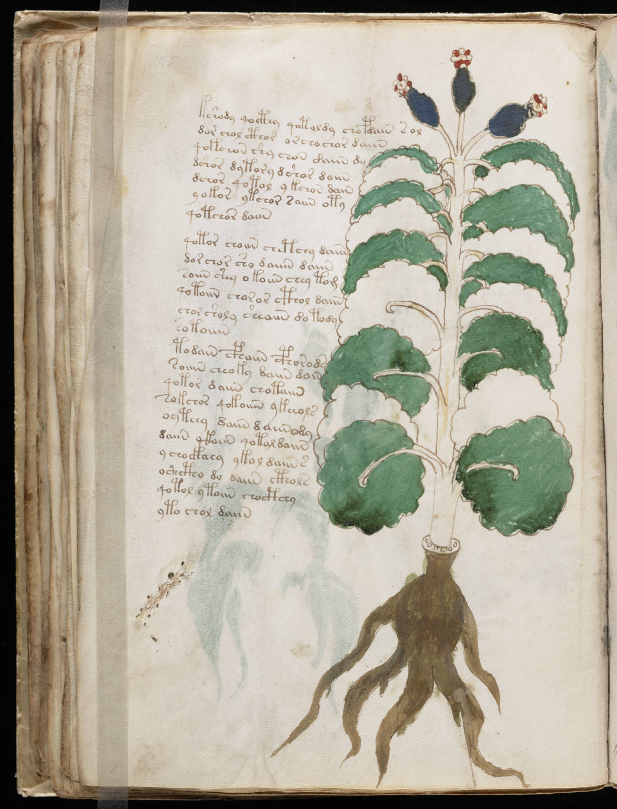

f37v
1kshody qocthy qotoldy chopdain sol2dor chol cthor oscho chor daiin3qokchon shy chon daiin dy4dshor dytory dshor daiin5dchor qotol ykchon dain6yokor ytchor saiin oty7qotchor daiin8qotor choiin chetchy daiin9dor chor sho daiiin daiin10soiin shey otoiin chey tom11qotoiin choror cthol daiin12chor sholy sheaiin dotody13sotoiiin14todain cphaiin cphorods15soiiin cheoky daiin dain16qotor daiin chotaiin17sokchor qokoiiin ykeeols18oyteey daiin daiin ody19daiin ykoiin qotal daiin20ychockaey ykol daiin s21oshctho do daiin cthols22qotol ytoiin chocthey23yto chol daiin
